汽車筆試練習
#1
#2
#3
#4
當開車進入「國道施工路段」時，下列哪一項駕駛行為最能有效預防事故發生？
#5
駕駛配備有 Level 2 等級先進駕駛輔助系統 (ADAS) 的新車行駛於國道。關於在駕駛過程中 的行為與認知，下列哪一項最符合安全規範並能有效預防事故？
#6
下列關於「變換車道」的行為，何者錯誤？
#7
駕駛人行駛至交岔路口，其行進、轉彎時，下列規定何者正確？
#8
汽車行駛中變換車道時，若未依規定全程顯示方向燈，其規定為何？
#9
汽車在同向二車道以上之道路，除應依標誌或標線之指示行駛外，下列何種行為正確？
#10
汽車駕駛人於車流中利用空隙頻繁變換車道超車，下列何者正確？
#11
汽車駕駛人行駛於高速公路、快速公路，以變換燈光、連續密集按鳴喇叭迫使前車讓道，下列何者正確？
#12
關於車輛配置之「先進駕駛輔助系統(ADAS)，如自動車距保持系統(ACC)、車道維持輔助系統 (LKA)」，下列敘述何者正確？
#13
汽車駕駛人在道路上任意以迫近、驟然變換車道方式迫使他車讓道：
#14
汽車駕駛人行經路口，遇有交通警察指揮與燈號顯示不一致時，應如何行駛？
#15
曾因酒駕經吊銷駕駛執照，於重新考照後，必須加裝何種設備於車上始得行駛？
#16
完成酒駕防制教育或酒癮治療並經考驗合格後，拿到的駕照僅能開裝設有車輛點火自動鎖定裝置(酒精鎖)之汽車且強制使用時間為？
#17
關於酒駕之規定，下列何者正確？
#18
汽車駕駛人，駕駛汽車經測試檢定吐氣所含酒精濃度達每公升0.25毫克或血液中酒精濃度達 0.05%以上，18歲以上未滿70歲之同車乘客，倘無特殊原因，是否應受處罰，下列敘述何者正確？
#19
汽車駕駛人飲酒後已間隔一段時間，自認酒精已代謝且無不適，下列何者正確？
#20
汽車駕駛人酒後駕車初犯，酒精濃度測試超過法規標準，下列何者正確？
#21
汽車駕駛人10年內第3次以上酒駕，下列何者正確？
#22
根據現行規定，若駕駛人遭遇警察攔檢並明確表示「拒絕接受酒精濃度測試」，其初次違規 的處罰為何？
#23
關於酒駕「累犯」的加重處罰規定，若駕駛人在幾年內第二次違反酒駕規定，將會被視為累犯並處以最高額罰鍰，且其後每次違規都會按次加罰 9 萬元？
#24
推廣「代駕服務」是減少酒駕的重要手段。關於代駕服務的觀念，下列哪一項敘述最能正確 體現安全保障？
#25
汽車駕駛人有酒駕毒駕之情形，除汽車駕駛人處罰鍰及吊扣(銷)駕照處分外，所駕駛之該車 輛尚須？
#26
關於汽機車駕駛人「酒測值超標」時，針對「同車乘客」之連坐處分，下列何種情況「免予處罰」？
#27
駕駛人酒精濃度超過規定標準，駕車肇事致人重傷或死亡者，除依刑法處置外，其行政處分為何？
#28
汽車駕駛人酒精濃度超過規定標準，且同車附載未滿12歲兒童，依規定其處罰為何？
#29
若駕駛人拒絕接受酒精濃度測試檢定，依現行法規應處以：
#30
酒駕防制教育訓練課程內容含括道路交通法令、肇事預防處理及法律責任等，總時數共：
#31
汽車駕駛人申請參加酒駕防制教育訓練之費用由誰負擔？
#32
駕駛他人車輛酒駕違規是否須受吊扣牌照處分？
#33
汽車駕駛人於幾年內第2次違反「酒精濃度超過規定標準」規定，依其駕駛車輛所定罰鍰最高額處罰之？
#34
汽車所有人明知汽車駕駛人有酒精濃度超過規定標準、吸食毒品、迷幻藥等情形，而不予禁止駕駛者，依道路交通管理處罰條例之規定，除處罰鍰外，將對該汽車採取何種處分？
#35
汽車駕駛人酒後駕車經抽血檢測，血液中酒精濃度超過0.05%，依照道路交通管理處罰條例下列何者為錯誤？
#36
裝設車輛點火自動鎖定裝置(酒精鎖)之車輛，駕駛人啟動前須符合何種條件？
#37
汽車駕駛人行車時，遇前方道路壅塞情況下應？
#38
汽車駕駛人在道路上蛇行，或以其他危險方式駕車（如惡意逼車），下列處罰何者正確？
#39
汽車駕駛人行經路口，遇有警察指揮與燈號顯示不一致時，應如何行駛？
#40
汽車駕駛人於行駛道路時，手持香菸、吸食、點燃，有影響他人安全者，下列何者正確？
#41
關於汽車裝載貨物之規定，下列何者屬於「不當行為」且會受罰？
#42
汽車駕駛人拒絕接受酒精濃度測試檢定者，應處罰鍰新臺幣多少？
#43
關於路側劃設之「紅色實線」（禁止臨時停車線），其禁止臨時停車之時間原則為何？
#44
駕駛人酒精濃度超過規定標準，駕車肇事致人重傷或死亡者，其處分為何？
#45
汽車行駛下長坡時，正確的駕駛方式為何？
#46
下列哪一項敘述是錯誤的？
#47
汽車駕駛人於10年內第2次違反酒駕規定，其罰鍰金額為新臺幣？
#48
汽車駕駛人連續駕車超過8小時，如應歸責於汽車所有人者，應受到何種處分？
#49
在設有禁止停車標誌、標線(黃實線)的路段，停車規定為何？
#50
小型車在設有彎道、狹路、坡路、單行道標誌之路段，因讓車、停車或起駛有必要者，是否可以倒車？
#51
汽車駕駛人將駕照借供他人駕車者，應處罰：
#52
汽車駕駛人在1年內違規記點每達12點者，除施以道安講習，並處：
#53
汽車駕駛人酒精濃度超過規定標準者，處新臺幣多少元罰鍰？
#54
在設有彎道、坡路、狹路、狹橋、隧道標誌之路段或鐵路平交道可否迴車？
#55
職業汽車駕駛人之職業駕駛執照因逾期審驗被註銷時，關於其申請與駕駛規定，下列何者正 確？
#56
汽車駕駛人行駛道路下列何者為對？
#57
關於汽車載人規定，下列何者正確？
#58
小型汽車在同向二車道以上道路行駛時，下列何者敘述正確？
#59
#60
#61
汽車行駛時，駕駛人對於視線範圍內顯示設備之使用，下列何者正確？
#62
汽車駕駛人吸食毒品、迷幻藥、麻醉藥品或酒類後駕駛汽車，下列何者錯誤？
#63
駕駛人將車輛駛入加油站準備加油，下列做法何者正確？
#64
駕駛人行車中發現後座孩童將手伸出車窗外，下列做法何者正確？
#65
汽車行駛於道路時，駕駛人：
#66
在行車途中，精神疲勞稍有睡意，你應該怎麼辦：
#67
行駛市區道路時，後方有消防車鳴笛駛近，而駕駛人恰好與消防車同方向同路線，下列做法何者正確？
#68
駕駛人赴宴飲酒後，自覺僅喝了一點且頭腦清醒，同行友人亦表示看不出異狀，下列觀念何 者正確？
#69
依道路交通安全規則規定，下列何者不得參加汽車駕駛執照考驗？
#70
汽機車駕駛人酒後駕車，其吐氣酒精濃度超過規定標準但未涉刑事處罰者，應處：
#71
汽車駕駛人，行車速度超過規定之最高時速40公里以上者，處罰鍰新臺幣：
#72
酒醉駕車或行經行人穿越道不讓行人優先通行因而致人傷亡，如應負刑責者：
#73
汽車駕駛人於行駛道路時，以手持方式使用行動電話、電腦或其他相類功能裝置進行撥接、通話、數據通訊或其他有礙駕駛安全之行為者，處罰鍰新臺幣：
#74
駕車酒精濃度超過規定標準，除當場移置保管該汽機車及吊扣其駕駛 執照1至2年，並處罰 鍰新臺幣：
#75
酒精濃度超過規定標準駕車之違規人，於10年內第2次違反酒後駕車之規定，除處罰鍰新臺幣120,000元，及當場移置保管該汽車，並應施以道路交通安全講習：
#76
兩輛以上之汽車在道路上競駛或競技者，除處罰汽車駕駛人新台幣 30,000~90,000元罰鍰，及當場禁止其駕駛，並應：
#77
汽車駕駛人若拒絕接受酒精濃度測試檢定者，除處罰鍰新臺幣 180,000元，並應施以道路交通安全講習：
#78
汽車所有人，明知駕駛人有酒後駕車之情形，而不予禁止者，除處罰鍰外，並應：
#79
汽車駕駛人無照駕駛或酒醉駕車因而致人受傷或死亡，依法應負刑事責任者，加重其刑至：
#80
汽機車駕駛人，駕駛汽機車經酒精濃度測試檢定超過標準值，除罰鍰、 當場移置保管該汽機車外，並吊扣其駕駛執照：
#81
汽車駕駛人於道路上蛇行駕駛，應處以：
#82
酒後駕車酒精濃度超過規定標準被當場移置保管車輛，其罰鍰：
#83
在高速或快速公路行車：
#84
酒後開車，對駕駛人會產生「視覺之隧道效應」，駕駛者猶如在隧道中行車，前有亮光但四周漆黑，故酒後駕車：
#85
汽車駕駛人駕駛汽車經測試檢定，其吐氣所含酒精濃度不得達每公升：
#86
小客車附載幼童未依規定安置於安全椅者，應處駕駛人：
#87
汽車駕駛人對於6歲以下或需要特別看護之兒童，單獨留置車內者，處駕駛人：
#88
汽車駕駛人對幾歲以下或需要特別看護之兒童，單獨留置於車內者，處駕駛人新臺幣3,000元罰鍰，並施以4小時道路交通安全講習：
#89
汽車駕駛人行車速度，超過規定之最高時速多少公里以上者，處新臺幣6,000～36,000元罰鍰，並當場禁止其駕駛：
#90
汽車駕駛人駕駛營業大客車，因酒後駕駛應吊銷其駕駛執照，並：
#91
駕車於上坡路段使用二檔時，下坡應使用：
#92
汽車下長坡時，最安全控制速度的方法，是使用：
#93
下列敍述何者正確：
#94
禁止停車路段，其禁止時間為每日之：
如有延長或縮短之必要時，應以標誌及附牌標示之。
#95
禁止臨時停車路段，其禁止時間為每日之：
如有縮短之必要時，應以標誌及附牌標示之。
#96
禁止臨時停車路段：
#97
禁止停車路段：
#98
汽車可停車路段，若無停車位時:
#99
汽車行駛至設有禁止迴車標誌、禁止左轉標誌，劃有分向限制線、禁止超車線或禁止變換車道線之路段：
#100
汽車駕駛人拆除消音器造成噪音，處罰鍰丶當場禁止其行駛丶吊扣汽車牌照6個月，於1年內再犯者，處：
#101
#102
#103
#104
#105
#106
#107
#108
#109
#110
#111
#112
#113
#114
#115
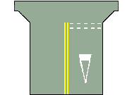
圖中白色倒三角型標線是：
#116
#117
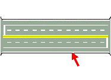
圖中箭頭所指白色實線為：
#118
#119
#120
#121
#122
#123
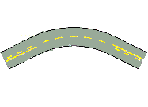
圖中黃色單實線與黃色虛線併列部分為：
#124
#125

圖中黃色實線為：
#126
#127
#128
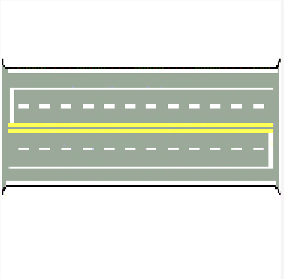
圖中最外側的路面邊線與車道線中間的白色實線為何種標線？
#129
#130
#131
#132
#133
#134
#135
#136
#137
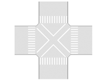
圖中路口交叉型標線是？
#138
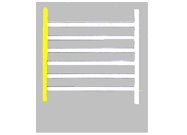
駕駛人如果在道路上發現圖中的橫向標線時，應該如何反應？
#139
自行車騎士手勢預告即將
#140
自行車騎士手勢預告即將
#141
用以劃分路面成雙向車道，禁止車輛跨越行駛，並不得迴轉的「黃色雙實線」稱為什麼？
#142
汽車駕駛人行經鐵路平交道時，若車輛在鐵軌上突然熄火且無法發動，此時警鈴已響、遮斷器 開始降下。根據事故預防與緊急處置程序，下列哪一項應變作為最正確？
#143
以下對於輪胎維護的敘述何者正確？
#144
汽車行經鐵路平交道，遇車輛拋錨等突發狀況卡在鐵軌上無法駛離時，駕駛人應如何處置最為正確？
#145
行近鐵路平交道，若遮斷器故障保持在上方未放下，但現場已有看守人員手持旗號示警，駕駛人應如何處置？
#146
車輛行經平交道遇拋錨或障礙時，應立即進行應變。其順序為：
#147
汽車駕駛人行近鐵路平交道前方車輛已通過，警示燈光已亮、警鈴已響起，下列何者正確？
#148
下列何項在鐵路平交道的行為，違者可處新臺幣 15,000元以上 90,000元以下罰鍰？
#149
關於在鐵路平交道違規之處罰，下列敘述何者正確？
#150
汽車行駛至有大眾捷運系統共用通行之交岔路口，遇警鈴已響、閃光號誌已顯示時，駕駛人應如何處理？
#151
汽車行近鐵路平交道前，若前車尚未駛離平交道，後車應如何處理？
#152
若車輛在鐵路平交道上熄火時，緊急應變的正確順序為何？
#153
行近鐵路平交道時，若看到警鈴已響、閃光告警燈已閃爍，但遮斷器還沒放下來，駕駛人應該：
#154
關於「強制汽車責任保險」，若駕駛人因酒後駕車肇事，保險公司在給付受害人理賠金後，法律上如何處理？
#155
下列何種駕駛行為，最符合環保駕駛原則？
#156
國道曾發生多起車輛啟用先進駕駛輔助系統(ADAS)系統追撞緩撞車的事故，下列有關ADAS的敘述，何者錯誤？
#157
在國道行車時，常會看到後方裝有大型黃色緩衝裝置的「緩撞車」(或緩撞拖車)。關於緩撞車 的功能與認知，下列敘述何者正確？
#158
自中華民國115年2月28日起新登檢領照之自用小客車有黏貼隔熱紙者，前擋風玻璃可見光透過率應為：
#159
受限制駕駛人不依規定駕駛安裝「車輛點火自動鎖定裝置(酒精鎖)」之車輛者，除處罰鍰外，該車輛應如何處置？
#160
汽車行至交岔路口，即便前方號誌為「綠燈」，但聽聞後方或橫向有緊急車輛（如救護車）警號時：
#161
國道路肩（外側路肩）在特定時段會開放行駛。下列有關路肩的使用規定，何者錯誤？
#162
檢查自動變速箱油量時，通常需要在什麼狀態下檢查較準確？
#163
以下對於輪胎維護的敘述何者正確？
#164
領有汽車駕照，駕駛重型機車者：
#165
汽車行駛至鐵路平交道，警鈴已噹噹響起，鐵路平交道號誌雙紅燈閃爍，此時若車輛因故停留 於軌道區且無法駛離時，駕駛人最重要的保命處置程序為何？
#166
鐵路平交道上無看守人員管理或無遮斷器、警鈴、閃光號誌之設備者駕駛人應在軌道外多少公尺前暫停、看、聽鐵路兩方無火車來時，始得通過：
#167
汽車駕駛人在一年內違規記點共達多少點時，應施以道路交通安全講習？
#168
汽車駕駛人駕駛汽車肇事，無人受傷或死亡而未依規定處置且逃逸者，除處新臺幣1,000元上3,000元以下罰鍰外，應併予何種處分？
#169
未滿60歲之職業駕駛人之職業駕駛執照，應自發照之日起，應每滿幾年審驗 1 次？
#170
根據法規定義，以規定之線條、圖形、標字或其他導向裝置，劃設於路面或其他設施上，用以管制道路上車輛駕駛人與行人行止之交通管制設施，稱之為？
#171
當車輛故障於高速公路邊待援並設置警告標誌及警示燈時，下列敘述何者正確？
#172
行駛中若發現儀表板紅色「煞車系統警示燈」持續亮起（已確認手煞車完全放下），駕駛人應如何正確處理？
#173
汽車出廠滿8年汽車所有人未依規定期限實施排放空氣污染物定期檢驗之法律責任，下列敘述何者正確？
#174
自民國96年2月起，已領有大貨車駕照「直接晉級」考領聯結車駕照者，其駕駛資格為何？
#175
自民國112年6月30日起，新考領大貨車駕駛執照者，依規定得駕駛下列哪種車輛？
#176
#177
#178
汽缸總排氣量在 1,200立方公分(Ｃ.Ｃ.)以下之汽車在高速或快速公路行駛有無限制？
#179
關於超車時的排檔操作方式，下列敘述何者正確？
#180
在高速公路服務區、休息站內停放之車輛，其停放時間最多以多久為限？
#181
關於長下坡路段善用引擎煞車以輔助控制車速，下列敘述何者正確？
#182
行駛中儀錶板「低引擎機油壓力」警示燈突然亮起，駕駛人應如何處置？
#184
圖1
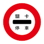
圖2
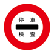
圖3
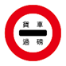
下列敘述何者正確?
#185
下列何者非「停車再開」？
#186
有關汽車省油駕駛方法，下列何者正確？
#187
汽車儀表板上顯示此圖示時，通常是指:
#188
依據法規定義，「道路」不包含下列何處？
#189
欲利用引擎煞車減速（如下長坡）時，應如何操作？
#190
汽車駕駛人因違反道路交通安全規則，致人重傷者，除罰鍰外還會受到何種處分？
#191
行駛中急踩剎車時，車體右後側向右甩滑失控，方向盤應如何操作？
#192
關於「繳銷」牌照之敘述，下列何者正確？
#193
「禁止會車」與「雙向道」兩種標誌均涉及對向來車，關於兩者差異之敘述，下列何者正確？
#194
圖中自行車騎士手勢預告即將:
#195
汽車行駛高速公路及快速公路，遇有濃霧、濃煙、強風、大雨或其他特殊狀況，致能見度甚低時，其時速應低於幾公里?
#196
汽車行駛中應以平穩漸進的速度行駛，在同一車速下，使用何種檔位的輸出扭力較大？
#197
手排車踩離合器踏板的動作為何?
#198
我國公路路線編號標誌以不同外框形狀區分道路等級，下列配對何者正確？
#199
汽車行至交岔路口前，見到路口行車管制號誌已變換為黃燈時，應如何行駛最安全？
#200
汽車在3個月內因違規記次累計3次，應受何種處分？
#201
行駛中發現前方設有「道路封閉」施工標誌時，駕駛人應如何處置？
#202
圖中標誌為:
#203
下列有關高速公路長途駕車之敘述，何者錯誤？
#204
引擎排氣呈現「藍白色煙」時，通常代表引擎發生什麼問題？
#205
儀表板上顯示此圖示時，通常是指？
#206
本燈號使用時機？
#207
臨時停車時若車上有6歲以下小孩，何者正確？
#208
違反處罰條例之受處罰人不服處罰之裁決者，應以誰為被告，逕向管轄之高等行政法院地方行政訴訟庭提起訴訟？
#209
駕駛人行駛高速公路，發現應從前方匝道駛出，但目前所在車道與外側出口車道之間繪有白色 雙實線「禁止變換車道線」，應如何處置？
#210
道路中央之黃色標線與同向車道間之白色標線，均可能出現實線與虛線併列的形式，關於兩者 之差異，下列何者正確？
#211
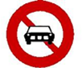
車輛行駛於路上，看到此標誌，表示何種車輛不得進入？
#212
此標誌性質為？
#213
下列何者為是？
#214
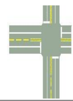
車輛行駛於圖中道路，於哪種標線可超車？
#215
色實線禁止臨時停車線為？
#216
有關駕駛輔助系統下列何者敘述正確？
#217
自動排檔車輛，將排檔桿放置於何檔位不可啟動引擎？
#218
座位數（包括駕駛人在內）幾座以下之客車為小客車？
#219
關於駕駛自動排檔車輛上高速公路的敘述，使用檔位下列何者正確？
#220
持有職業駕駛執照未滿60歳之駕駛人，其職業駕駛執照，應自發照之日起：
#221
關於行人穿越道標線之外觀樣式，下列敘述何者正確？
#222
設有禁止臨時停車標誌之路段？
#223
汽缸總排氣量超過250立方公分以上大型重型機車行駛路權，下列何者正確？
#224
「禁止會車」與「禁止超車」均為紅色圓形禁制標誌，且圖案皆涉及兩車關係，關於兩者管制 行為之差異，下列何者正確？
#225
自下列何者時間起，新考領汽車駕照者不得駕駛輕型機車？
#226
有關小型車職業駕駛人，職業年齡至多可延長至幾歲，年滿後即應依規定申請換發同等車類之普通駕駛執照？
#227
高速公路減速車道之設置位置為何？
#228
未經前車允讓即強行超車？
#229
汽車行駛高速公路，在正常天候狀況下，行駛速率為每小時100公里時，前後兩車間之最小行車安全距離？
#230
汽車駕駛人駕駛汽車肇事，無人受傷或死亡而未依規定處置者，罰鍰是多少？
#231
車輛行駛過程中，如有急加速或急煞車行為，下列何者敘述錯誤？
#232
下列駕駛人之倒車行為，何者未違反交通法規規定？
#233
下列圖示哪個是行車管制號誌?
#234
汽缸總排氣量達550立方公分以上之大型重型機車，行駛於高速公路及快速公路時，下列何者不符合規定？
#235
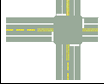
圖中黃色雙實線的作用為？
#236
邊禁止變換車道。領有大客車駕照者？
#237
關於駕駛人的行為，下列敘述何者正確？
#238
關於特種車輛，如消防車、救護車、警備車、工程救險車及毒性化學物質災害事故應變車，其行車速度，下列敘述何者正確？
#239
汽車駕駛人駕駛汽車肇事，若無人受傷或死亡且汽車尚能行駛，卻不儘速將汽車位置標繪並移 置路邊，導致妨礙交通者，依規定應如何處罰？
#240
汽車駕駛人領有小型車駕駛執照，駕駛聯結車、大客車或大貨車者，其處罰規定為何？
#241
汽車行至坡度大約相等的上、下坡道，上坡時若以2檔行駛，下坡時應如何選用檔位以達到省油、安全又節省時間的效果？
#242
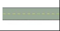
如圖所示，道路中間標劃的「黃色虛線」為何種標線？
#243
汽車駕駛人聽聞消防車、救護車、警備車、工程救險車、毒性化學物質災害事故應變車之警號 時，不立即避讓，依據道路交通管理處罰條例，將會受到何種處罰？
#244
關於駕駛人聞消防車、救護車等緊急車輛警號而未避讓之處罰，下列敘述何者正確？
#245
汽車行駛於非高、快速公路之一般道路上，若駕駛人或乘客未繫安全帶，應處駕駛人多少罰鍰？
#246
此交通指揮人員之手勢表示何意？
#247
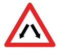
此標誌是在提醒駕駛人注意什麼？
#248
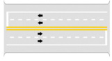
用以劃分路面成雙向車道，禁止車輛跨越行駛，並不得迴轉的「黃色雙實線」稱為什麼？
#249
圖中用以促使車輛駕駛人減速慢行之標誌表示將近何處？
#250
三角形紅邊、白底、黑色圖案的交通標誌，其主要類別為何？
#251
在國道行駛時，看到交流道出口預告標誌下方標示「2,000m」或「2km」，代表什麼意義？
#252
此標誌，是用以指示？
#253
自中華民國112年6月30日起，新考領之汽車駕駛執照，關於駕駛輕型機車之規定為何？
#254
某路口同時禁止直行與左轉，僅允許車輛右轉，此時應設置下列何種標誌？
#255
年滿68歲小型車職業駕駛人，若欲延長其職業駕駛執照有效期間至年滿70歲止，下列規定何 者正確？
#256
未領有汽車駕駛執照之人，若違反道路交通管理處罰條例規定，而應受「吊扣」駕駛執照處分 時，關於其考領執照之規定為何？
#257
執行任務中的消防車、救護車、警備車、工程救險車，在同向二車道以上之道路行駛時可行駛何處?
#258
受吊銷駕駛執照終身不得考領處分者，須先完成違規教育講習（重新申請考驗班）後，始得參加駕照考驗。請問汽車班應接受之講習時數為何？
#259
「單行道」標誌與「道路遵行方向」標誌均為藍底白色箭頭，下列關於兩者差異之敘述，何者 正確？
#260
汽車駕駛人駕駛汽車肇事致人受傷或死亡者，以下處置何者正確?
#261
此標誌表示?
#262
駕駛人依交通指揮人員停止手勢在路口等候後，見指揮人員變換手勢示意其方向通行，此時應如何起步？
#263
汽車駕駛人拆除消音器造成噪音，處罰鍰丶當場禁止其行駛丶吊扣汽車牌照多久?
#264
癲癇疾病患者，檢具醫療院所醫師出具最近2年以上未發作診斷證明書者？
#265
夜間行車使用遠光燈時，下列何種情況應立即切換為近光燈？
#266
駕駛執照考驗，路考之及格分數為？
#267
汽缸總排氣量未滿多少之機車不得行駛高速公路？
#268
我國國道系統之路線編號，下列何者正確？
#269
同向車道間繪有白色虛線「車道線」與白色實線「禁止變換車道線」，關於兩者之差異，下列 何者正確？
#270
汽車行駛速度愈高，則愈省油，這個說法是否正確？
#271
道路入口處設有「禁止四輪以上汽車進入」標誌，下列何種車輛可進入該路段？
#272
高速公路及快速公路管理機關為何？
#273
#274
汽車行駛應繳費之公路橋樑逃避繳費，並有致收費人員受傷或死亡者之情事者，應？
#275
關於「禁止任何車輛進入」與「禁止通行」兩種禁制標誌之差異，下列敘述何者正確？
#276
駕駛人於倒車時，若發現視線受阻或無法由後視鏡完全確定車後狀況是否安全，下列何種作法最為正確？
#277
汽車行駛至槽化線區域時，正確的行為為何？
#278
關於領有國內駕駛執照之人申請換領「國際駕駛執照」的規定，下列敘述何者正確？
#279
#280
汽缸總排氣量550立方公分以上之大型重型機車，下列敘述何者正確？
#281
關於汽車牌照使用之規定，下列何者正確？
#282
汽車駕駛人肇事致人重傷或死亡而逃逸，其駕照處分為何？
#283
利用汽車犯罪，經判決有期徒刑以上之刑確定者，將處：
#284
轉動汽車方向盤半圈以上時，應採用何種操作方法？
#285
其出入口完全控制，中央分隔雙向行駛，除起迄點外，並與其他道路立體相交，專供汽車行之公路為何？
#286
車輛駕駛人駕車時，因疏忽致人死傷，除負行政責任外，亦應擔負以下何種責任？
#287
受終身不得考領駕駛執照之處分者，下列何者正確？
#288
關於汽車學習駕駛證，下列何者正確？
#289
抗拒執行交通勤務警察，或依法執行交通稽查任務人員之取締，因而引起傷害或死亡者，下列何者正確？
#290
執行任務之消防車、警備車、工程救險車？
#291
我國公路路線編號系統，以編號之奇偶數區分道路走向，下列敘述何者正確？
#292
車輛停車怠速之時間限制，下列何者正確？
#293
有關高速公路或快速公路之行車標誌使用方式，下列何者正確？
#294
汽車行駛於大眾捷運系統車輛共用通行之車道時，聞或見大眾捷運系統車輛臨近之聲號或燈光 時，下列處置何者正確？
#295
汽車行駛於長下坡，為避免煞車過度使用而失靈，駕駛人應如何操作最為安全？
#296
小貨車因業務需求必須附載隨車作業人員時，其人數規定為何？
#297
關於高速公路與快速公路之交通事故，各自由何單位全權負責處理？
#298
參加汽車駕駛執照考驗時，筆試（交通規則）之及格標準為幾分？
#299
圖片（梅花標誌）代表之路線編號意義為何？
#300
為達到環保及節能減碳之駕駛習慣，開車時應儘量避免下列何種駕駛行為以減少油耗？
#301
關於車輛配備之「駕駛輔助系統」，下列敘述何者正確？
#302
汽車駕駛人行至有燈光號誌管制之交岔路口闖紅燈，並因而肇事致人重傷時，關於駕駛執照處分下列何者正確？
#303
汽車行駛涉水路段後，對於煞車系統有何影響？
#304
關於領有學習駕駛證之學員，其道路駕駛規定何者正確？
#305
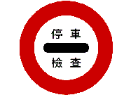
圖片標誌代表之涵義為何？
#306
圖片標誌之涵義為何？
#307
關於汽車駕駛行為與油耗、廢氣排放的關係，下列敘述何者錯誤？
#308
小客車駕駛人附載幼童行駛於市區一般道路時，若未依規定將幼童安置於兒童安全椅上，下列何者為正確處分？
#309
關於汽車車速與駕駛人視野的關係，下列敘述何者正確？
#310
答 題號 題 目 案 駕駛人駕車行經設有行人穿越道之路口，發現有行人正準備穿越時，下列處置何者正確？
#311
乘客遺留財物在車上，應：
#312
客車上下乘客應在：
#313
駕駛人駕車進入道路施工路段，前方設有施工警告標誌及交通錐排列縮減車道，下列駕駛行 為何者正確？
#314
駕駛人欲建立安全的用路習慣，下列何項做法最為適當？
#315
駕駛人駕車於市區道路行駛時，前方路旁停有大型車輛或設有施工圍籬，導致視線受遮蔽而 無法看清前方狀況時，下列駕駛行為何者最為正確？
#316
根據國際OECD研究，汽車與行人、機車或自行車發生碰撞時，當撞擊速度由時速30公里提 高至時速50公里，被撞用路人之死亡機率變化為何？
#317
跟前車行到鐵路平交道前應該：
#318
駕駛人因塞車，發現前方路口號誌已轉為黃燈，此時最適當的做法是：
#319
行車中發現後方車輛持續逼近且頻繁閃燈催促，此時最適當的做法是：
#320
在駕車時，如發現有人牽著動物橫越道路時應:
#321
駕車行經泥濘或積水地段正有行人行走時應：
#322
遇老弱婦孺身心障礙者乘搭客車時應：
#323
以趁機加倍收費。長隧道內設置停車彎，其目的是供：
#324
汽車行駛於長隧道內：
#325
可以變換至車輛較少之車道。汽車定期檢驗，逾期一個月以上者，應處罰：
#326
汽車駕駛人，允許無駕駛執照之人，駕駛其車輛者應處罰：
#327
汽車駕駛人駕駛汽車肇事致人受傷或死亡，應即時處理，如肇事致人重傷或死亡而逃逸者：
#328
營業車(營業大客車除外)每年檢驗次數，應為：
#329
汽車檢驗分3種：
#330
未滿60歲職業汽車駕駛人之職業駕駛執照，應自發照之日起，每滿幾年審驗1次：
#331
領有學習駕駛證者應在何處學習駕駛：
#332
自用小客車領有牌照，其出廠年份未滿幾年者，免予定期檢驗：
#333
因患病、出國等事由，職業駕駛執照未能按時審驗時，可持原照及有關證明，向當地公路監理機關申請補辦審驗，但須在病癒或回國後：
#334
應考小型車普通駕駛執照者，須有學習駕駛多少時間之經歷：
#335
應考小型車職業駕駛執照者，須有學習駕駛經歷：
#336
託人代考駕照者，單就報考人之處分為：
#337
癲癇疾病患者，檢具醫療院所醫師出具最近二年以上未發作診斷證明書者：
#338
臨時停車停止時間：
#339
汽車車廂以外：
#340
汽車載運乘客：
#341
汽車駕駛人駕車，違反道路交通安全規則，因而肇事致人死亡者：
#342
汽車駕駛人駕駛汽車肇事，雖無人受傷或死亡，卻未依規定處置且逃逸者，除處罰鍰外，並：
#343
駕駛人不在未劃分標線道路之中央右側駕車者，應處：
#344
消防栓、消防車出入口，多少距離以內不得臨時停車：
#345
汽車駛近學校、醫院等處時：
#346
汽車行經設有學校、醫院標誌之路段，應該：
#347
在市區交通頻繁之道路：
#348
領有臨時牌照之車輛：
#349
前行車駕駛人聞後行車超車之喇叭聲，如車前路況無障礙時：
#350
聞有消防車、救護車、警備車、工程救險車、毒性化學物質災害事故應變車等之警號時，不論來自何方，應：
#351
鐵路平交道遮斷器未放下，或看守人員未表示停止時，應該：
#352
報廢之車輛：
#353
使用偽造、變造、或矇領之牌照者，應處：
#354
汽車駕駛人有下列情形之一者，應施以道路交通安全講習：
#355
領有牌照之自用小客車，除使用液化石油氣及壓縮天然氣為燃料者外，檢驗次數應為：
#356
小型車駕駛執照吊扣期間駕駛小型車者，除處新臺幣36,000～60,000元罰鍰，並當場移置保管該汽車外，並應：
#357
於身心障礙專用停車位違規停車者：
#358
牌照借供他車使用或使用他車牌照行駛者，除罰鍰外，並應：
#359
汽車駕駛人行駛高速公路、快速公路而不遵守管制規定，經當場舉發之處罰：
#360
在鐵路平交道超車、迴車、倒車或停車者，應處以：
#361
鍰並吊扣駕照。強行闖越鐵路平交道之處罰是：
#362
汽車駕駛人因違規記點，2年內經吊扣駕駛執照2次，再違反記點規定者，處以：
#363
占用道路之廢棄車輛，經民眾檢舉或由警察機關、環境保護主管機關查報後，由警察機關通知車主限期處理而屆期未清理者：
#364
占用道路之廢棄車輛，由環保單位或委託民間單位移置保管，經公告多久無人認領，可依廢棄物清除：
#365
逕行舉發汽車超速行駛時，其違規地點相距：
#366
汽車所有人或汽車駕駛人接獲違反道路交通管理事件通知單後，於
#367
小客車前座或貨車駕駛室乘人超過規定人數者，處汽車駕駛人：
#368
汽車肇事逃逸案件，經通知汽車所有人到場說明，無故不到場說明，或不提供汽車駕駛人相 關資料者：
#369
汽車駕駛人，在快車道上依規定行駛，因行人或慢車不依規定，擅自進入快車道，而致人受傷或死亡，依法應負刑事責任者：
#370
受處分人，如有不服處罰之裁決者，應以原處分機關為被告，逕向管轄之高等行政法院地方行政訴訟庭提起訴訟；其中撤銷訴訟之提起，應於裁決書送達後：
#371
下列何種違規行為得對汽車所有人逕行舉發處罰：
#372
拼裝車輛未經核准 領用牌證行駛或報廢車仍行駛道路者，其車輛：
#373
汽車駕駛人無照駕駛大貨車、大客車、聯結車之行為，經舉發後除罰鍰外，並：
#374
駕駛汽車行駛於高速公路或快速公路，汽車駕駛人、前座或小型車 後座乘客未繫安全帶者，將處駕駛人罰鍰新臺幣：
#375
違規停車經舉發後仍未改正，每逾：
#376
逕行舉發汽車超速行駛時，其：
#377
汽車駕駛人違規併排停車將處罰鍰新臺幣：
#378
汽車駕駛人無正當理由，不依規定接受道路交通安全講習者，處新臺幣1,800元罰鍰，經再通知依限參加講習，逾期6個月以上仍不參加者，應罰：
#379
汽車所有人或駕駛人於辦理車輛過戶、停駛、復駛、繳交牌照、註銷牌照、換發牌照或駕駛執照前：
#380
高速或快速公路匝道上速度限制每小時為：
#381
在高速公路最高速限每小時90公里以上之路段，行駛速率低於每小時：
#382
在高速或快速公路同一車道上行駛之小型車輛時速在70公里時，前後兩車間最少距離應為：
#383
大型車輛在高速或快速公路行駛，應在：
#384
汽車在高速或快速公路行駛中：
#385
正常天候下，高速或快速公路之最高行車速度限制為：
#386
濃霧、濃煙、大雨、強風，致能見度甚低時在高速或快速公路行駛之車輛時速：
#387
在單車道之匝道及加減速車道上駕駛車輛：
#388
在高速或快速公路行車錯過了出口匝道：
#389
梅花型的交通標誌是：
#390
高速或快速公路之內側車道為超車道，但小型車輛於不堵塞行車之狀況下：
#391
一般交通秩序會混亂，因而造成交通堵塞、癱瘓甚至造成車禍，其主要原因在於：
#392
車禍之發生大都是人為因素不遵守交通規則疏忽造成，因此應加強何者為先：
#393
汽車在強風中行駛，若感覺車身有搖晃現象時應：
#394
小客車行駛於高速公路時，以多少時速行駛，耗油最少?
#395
汽車號牌遺失不報請補發，經舉發後仍不辦理而行駛者：
#396
經終身吊銷汽車駕駛執照之受處分人，如為肇事致人死亡案件，經吊銷駕駛執照處分執行已逾幾年，得向公路主管機關申請考領駕駛執照：
#397
汽、機車進入加油站加油時：
#398
汽、機車進入加油站加油時：
#399
一般汽車緊急煞車時，如導致車輪鎖死，若將方向盤向右轉，車輛的行進方向為：
#400
行駛途中，遇前方路上發生事故，警察已到現場處理，應：
#401
領有學習駕駛證學習道路駕駛之行駛路線，須報請哪個機關核准：
#402
領有學習駕駛證學習道路駕駛時，應在哪些道路實施始為恰當：
#403
領有學習駕駛證學習道路駕駛時，如未領有駕駛執照之人在旁監護指導者，屬違規行為，應處以：
#404
雖帶有學習駕駛證，而在未經許可之道路或規定之時間，開車練習道路駕駛者：
#405
停車時應依車輛順行方向緊靠道路邊緣，其前後輪胎外側距離緣石或路面邊緣，不得逾：
#406
小型汽車於路邊臨時停車時，應依車輛順行方向緊靠道路邊緣，其右側前後輪胎外側距離緣石或路面邊緣不得超過：
#407
汽車須臨時停車時，應在無禁止臨時停車路段：
#408
汽車在設有彎道、陡坡、狹橋、隧道標誌之路段，或是鐵路平交道路段：
#409
執行任務完畢的消防車、救護車、警備車、工程救險車及毒性化學物質災害事故應變車其行車速度應：
#410
行駛中如發現道路上設有交通錐、拒馬、護欄等施工封閉設施或機具，但卻無施工人員時，表示：
#411
遇有內側車道封閉施工時，可否使用外側路肩通行？
#412
計程車駕駛人對乘客繫安全帶之規定，已盡告知義務乘客仍不繫安全帶應處罰：
#413
汽缸總排氣量 550 立方公分以上大型重型機車行駛高速公路，其駕駛人應有
#414
下列何者氣象資訊與道路災害息息相關，應多加留意?
#415
下列哪種駕駛行為有誤?
#416
下列何者「非」公路單位執行封橋封路等交通管制之目的?
#417
雪地行車的油門及煞車操控方式何者正確？
#418
冬季行經高山地區如遇下雪，應如何行車才安全
#419
雪地駕車過彎操控方式何者正確?
#420
依據車輛具駕駛輔助系統功能的車主手冊內容，該功能遇下列何種道路情境可能無法即時正常運作正確辨識，進而造成交通事故危險
#421
在使用駕駛輔助系統時，駕駛人應如何應對突然的交通情況變化？
#422
能偵測前方障礙物資訊並適時提供駕駛人警告，必要時直接介入煞車之輔助系統稱為?
#423
下列哪項不是使用車輛駕駛輔助系統的優點？
#424
使用車輛駕駛輔助系統時最重要的注意事項是什麼？
#425
#426
#427
#428
#429
#430
#431
#432
#433
#434
#435
#436
#437
#438
#439
#440
#441
#442
#443
#444
#445
圖中白色斜紋線為：
#446
圖中白色紋線為：
#447
行經路口發現有攜帶白手杖或導盲犬之行人正在穿越道路時，應如何行駛？
#448
綠燈時，開車行經行人穿越道，若遇行人不依號誌擅自穿越，下列敘述何者錯誤？
#449
為消除「A 柱視野死角」並落實行人優先，汽車轉彎行近行人穿越道前，最安全的作法是：
#450
所謂二段式開門方法，是：
#451
甲為自用小客車駕駛人，乙為營業大貨車職業駕駛人。兩人一年內均有2次闖紅燈紀錄，依 115年新制，下列敘述何者正確？
#452
根據115年3月31日起實施之新制，關於駕駛人須參加矯正防制班講習，下列敘述何者正確？
#453
自115年3月31日起，營業大型車職業駕駛人1年內闖紅燈違規達幾次者，即應自費參加道路交通安全講習？
#454
115年3月31日起，營業大型車職業駕駛人應納入道安講習對象之特定違規行為？
#455
汽車駕駛人行至設有「右轉彎專用車道」的交岔路口，準備執行右轉。下列哪一項行為最符合 法規並能體現「主動停讓」精神？
#456
大型車接近行人穿越道，行人尚未踏入但有通行意圖時，下列何者正確？
#457
汽車駕駛人行近路口，未停讓行人穿越道上行人先行通過者，以下何者為錯誤？
#458
汽車駕駛人在路口看到綠燈亮起準備左轉，此時行人穿越道線上仍有行人正緩慢過馬路，下列 行為何項正確？
#459
行經無號誌且未劃分支幹道的路口時，若汽車駕駛人要左轉，而對向有一輛右轉車同時要進入同一個車道，以下敘述何者正確？
#460
在無號誌交岔路口，橫線有分向標線、縱線未劃設分向標線，但同為雙向各有1車道之道路，兩車皆為轉彎車，請問要如何行駛？
#461
夜間遇到前方有行人穿越時，應該怎麼做？
#462
汽車駕駛人在多車道路段行駛，準備在路口左轉。下列哪一種駕駛行為是錯誤且具有危險性？
#463
汽車駕駛人行至交岔路口，遇前車停等禮讓行人時，以下何者正確？
#464
汽車駕駛人，駕駛汽車行近行人穿越道或其他依法可供行人穿越之交岔路口，不暫停讓行人先行通過，因而肇事致人受傷者，處新臺幣18,000～36,000元罰鍰，且其駕駛執照：
#465
汽車行經未劃設行人穿越道之交岔路口，遇有行人穿越時，應如何處理？
#466
行至路口遇閃光紅燈號誌時，駕駛人應：
#467
汽車駕駛人，駕駛汽車行近行人穿越道或其他依法可供行人穿越之交岔路口，遇有攜帶白手杖或導盲犬之視覺功能障礙者時，不暫停讓其先行通過者，處新臺幣：
#468
汽車行近行人穿越道前，應如何落實停讓觀念？
#469
行經設有「行人優先區」起點標誌之區域或巷道，汽車駕駛人應：
#470
駕駛人行近行人穿越道未依規定停讓行人，導致行人受傷或死亡，其法律責任為何？
#471
轉彎車行經路口遇有行人時，正確的防禦駕駛觀念是：
#472
若路口已顯示綠燈，但行人穿越道上仍有尚未走完之行人，應如何處理？
#473
汽車行駛至交岔路口遇綠燈亮起時，關於通過路口之方式，下列敘述何者較為正確？
#474
接近設有行人穿越道的路口時，駕駛人應如何處置？
#475
建立「路口停讓文化」對於道路安全的終極目標是：
#476
汽車行經以下交岔路口應依規定停讓，何者不正確？
#477
「防禦駕駛」在路口最重要的觀念是？
#478
汽車準備右轉彎前，應於多少距離前換入最右側車道並顯示方向燈？
#479
汽車行近未設行車管制號誌之行人穿越道時，關於駕駛人應有之行為，下列敘述何者正確？
#480
「行走行人」之綠色燈號閃光顯示時，表示：
#481
在路口遇大型車輛右轉時，小型車應如何應對？
#482
在無號誌、無標誌且路權相同的路口，兩車均為直行車且同時到達，應如何通行？
#483
有關行車速度，依速限標誌或標線之規定，無速限標誌或標線者，下列敘述何者錯誤？
#484
兩輛汽車從不同方向，同時抵達無號誌路口且進入路口行向車道數相同，關於通行的優先權，下列何者正確？
#485
駕駛人在路口進行「擺頭察看」動作，其主要目的是：
#486
接近路口時號誌由綠轉黃，最安全且合法的作法為何？
#487
下列哪一種情形在交通法規中不屬於「闖紅燈」的定義？
#488
汽車駕駛行經交岔路口遇紅燈亮起時，前輪通過停止線煞停在行人穿越道上，是否屬闖紅燈行為？
#489
關於闖紅燈之違規認定標準，下列敘述何者錯誤？
#490
車輛面對紅燈亮起後，車身仍超越停止線，下列敘述何者錯誤？
#491
汽車駕駛人行經有燈光號誌管制之交岔路口，在無箭頭導向燈號之狀況下，闖紅燈而左轉或右轉應處罰下列何者錯誤：
#492
汽車駕駛人跟隨大型車後方，因視線受阻未察燈號轉紅而通過停止線進入路口繼續行駛，下列何者正確？
#493
號誌故障之路口，經現場依法令執行指揮交通之人員指揮前進時，其效力為何？
#494
汽車左轉時，若超越停止線前燈號已轉換為紅燈，下列敘述何者正確？
#495
汽車駕駛人因避讓執行任務之消防車而越線闖紅燈，關於其處置程序下列何者正確？
#496
汽車行至無號誌路口，支線道車輛遇幹線道車輛時，其通行權規定下列何者正確？
#497
汽車駕駛人行至有號誌之交岔路口，遇交通擁擠而逕行駛入交岔路口範圍內，致妨礙其他車輛 通行者，以下何者正確？
#498
汽車於紅燈時，跨越停止線在路口內進行迴轉，其行為應如何認定？
#499
在設有號誌路口，紅燈亮起時，直接右轉，係屬何種違規行為？
#500
車輛於未繪設路口範圍，無視於紅燈號誌，而有穿越路口之企圖，其車身並已伸越停止線且足以妨害其他方向人車通行者，是否為闖紅燈之行為？
#501
救護車非執行緊急救護勤務未鳴警號時，行經有號誌管制之交岔路口闖紅燈，是否為闖紅燈之行為？
#502
下列哪一種情況會被認定為「闖紅燈」？
#503
關於汽車於紅燈亮起後，車身跨壓行人穿越道之法律效果，下列敘述何者正確？
#504
汽車駕駛人行駛至交岔路口轉彎時應：
#505
在紅燈停等時，若橫向號誌已變紅燈，但自身方向綠燈尚未亮起，即先行起步跨越行人穿越 道，進行迴轉，下列敘述何者正確？
#506
車道設有「左轉彎專用道」，當僅直行及右轉綠箭頭亮起時，汽車駕駛人逕行透過左轉彎專用 道左轉之法律後果為何？
#507
當汽車行近行人穿越道，行人穿越道上已有行人通行，汽車應與行人保持多少距離才不違規？
#508
汽車行經未劃設行人穿越道之交岔路口，遇有行人穿越時，應如何處理？
#509
關於「閃光紅燈」與「閃光黃燈」之區別，下列敘述何者正確？
#510
車輛行至無號誌之圓環路口時，關於通行優先順序，下列敘述何者正確？
#511
駕駛汽車進入「行人優先區」，此時前方有行人在路中行走且未注意到後方來車，防禦作為為何？
#512
汽車駕駛人行至有燈光號誌管制之大眾捷運系統車輛共用通行交岔路口，紅燈右轉者，處罰鍰 新臺幣多少 ？
#513
關於道路上設置之「通學區起點」標誌，其主要之法規功能定義為何？
#514
在設有「左轉箭頭」及「圓形」綠燈的交岔路口，若此時亮起「圓形綠燈」，下列敘述何者正確？
#515
駕駛人行經山區道路，見前方設有「危險」警告標誌，但未附設說明牌，此時應如何處置？
#516
汽車行至無號誌路口，未劃分幹、支線道且車道數相同時，下列敘述何者錯誤？
#517
三角形「注意號誌」警告標誌，最可能設置於下列何種路段？
#518
圖中交通指揮手勢為:
#519
交通指揮人員可藉由手勢的指揮來引導行進車輛，此指揮手勢代表的意義為？
#520
駕駛人行經路口，交通指揮人員以手勢示意其左轉彎，此時駕駛人應如何行駛？
#521
行車管制號誌由紅燈轉為綠燈之前，會先顯示黃燈。關於黃燈之意義，下列何者正確？
#522
交通指揮人員可藉由手勢的指揮來引導行進車輛，圖中交通指揮人員手勢表示？
#523
以下何者圖示為『狹路』？
#524
關於行人穿越道標線，「枕木紋」與「斑馬紋」之設置原則，下列何者正確？
#525
駕駛人行經路口時，發現交通指揮人員之手勢與行車管制號誌指示不一致，應如何遵行？
#526
圖中手勢代表何種意義？
#527
行至圓環時，下列何者正確？
#528
以下標誌意義為何？
#529
以上標誌意義為何？
#530
關於「停止線」，下列敘述何者錯誤？
#531
地上白色倒三角型標線為？
#532
請問此手勢為何？
#533
駕駛人行經路口見路面繪有白色倒三角形「讓路線」標線，下列何種駕駛行為符合規定？
#534
#535
駕駛人行經山區道路，見前方設有「左側斷崖」警告標誌時，應如何因應？
#536
這個警察指揮手勢表示？
#537
車輛停止。汽車駕駛人行至輕軌捷運系統路口時？
#538
關於「車道管制號誌」，下列敘述何者正確？
#539
駕駛人行經無號誌路段之「斑馬紋行人穿越道」時，遇有行人正在穿越，應如何處置？
#540
駕駛人行駛中見到「注意號誌」警告標誌時，應如何因應？
#541
行車管制號誌顯示綠燈時，駕駛人應如何行駛？
#542
駕駛人接近路口時，見交通指揮人員對其方向做出停止手勢，此時駕駛人應將車輛停於何處？
#543
「雙向道」警告標誌最主要設置於下列何種路段？
#544
「當心兒童」警告標誌最常設置於下列何種路段？
#545
交通指揮人員做出不同手勢時，停止與通行之對象各有不同。下列關於指揮手勢之敘述，何者正確？
#546
執勤之交通警察比出圖片手勢時，其代表之涵義為何？
#547
行車管制號誌以紅、黃、綠三色燈號，管制道路上車輛之行止。下列何者為行車管制號誌之正 確功能？
#548
道路上設有紅色三角形「危險」警告標誌，其設置目的為何？
#549
高速公路或快速公路與其他道路或其他高快速公路相互連接，並以匝道構成立體相交之部分，稱之為何？
#550
汽車駕駛人行至多車道之圓環時，關於車輛優先權之規定何者正確？
#551
駕駛人行駛中見前方設有「右側縮減」警告標誌，應如何因應？
#552
答 題號 題 目 案 行車至交岔路口，並已越過停止線，如果黃燈亮了，應該：
#553
汽車行駛至交岔路口，其設有劃分島，劃分快慢車道者，在慢車道上行駛之車輛：
#554
對向行駛之左右轉彎車輛，已轉彎須進入同一車道時應讓：
#555
汽車行至號誌故障而無交通指揮人員指揮之交岔路口：
#556
汽車行駛至交岔路口，其行進轉彎，遇有交通指揮人員指揮與燈光號誌並用時，以：
#557
汽車行近行人穿越道前，應該：
#558
汽車駕駛人行經有燈光號誌管制之交岔路口闖紅燈，經當場舉發者：
#559
汽車駕駛人，駕車闖紅燈，經當場舉發，除罰鍰外並記違規點數：
#560
在多車道之路口前：
#561
汽車行經交岔路口，行車管制號誌為綠燈時：
#562
行車至交岔路口，號誌為閃光黃燈時，應該如何處置才正確：
#563
汽車行經無號誌管制之交岔路口，比較安全的做法是：
#564
汽車駕駛人，行經有燈光號誌管制之大眾捷運系統車輛共用通行交岔路口闖紅燈，經當場舉發者：
#565
汽車行駛至有大眾捷運系統車輛共用通行，但聲光號誌故障而無交通指揮人員指揮之交岔路口時，駕駛人應
#566
車輛行經輕軌號誌化路口，如何安全通過路口？
#567
下列哪種駕駛行為有誤？
#568
汽車駕駛人，駕駛汽車行近行人穿越道或其他依法可供行人穿越之交岔路口，有行人穿越 時，不暫停讓行人先行通過，經當場舉發者，處：
#569
汽車駕駛人，駕駛汽車行近行人穿越道或其他依法可供行人穿越之交岔路口，有行人穿越 時，不暫停讓行人先行通過，因而肇事致人受傷者，處：
#570
#571
#572
#573
#574
#575
#576
#577
#578
#579
#580
圖中白色虛線為：
#581
左臂向上，手掌向右微曲，表示：
#582
左臂平伸，手掌向下，表示：
#583
答 題號 圖 示 題 目 案 設有劃分島劃分快慢車道之道路，大型車駕駛行駛時，其轉彎規定何者正確？
#584
有關汽車行至無號誌或號誌故障而無交通指揮人員指揮之交岔路口，下列敘述何者錯誤？
#585
有關汽車行駛至交岔路口，其行進、轉彎之規定，以下敘述何者錯誤？
#586
車輛轉彎時，下列何者不正確：
#587
有關汽車駕駛人轉彎或變換車道時之規定，以下敘述何者正確？
#588
汽車駕駛人於路口左轉時，未禮讓對向直行車先行，依應受何種處罰？
#589
車輛左(右)轉彎時，應先顯示車輛前後之左(右)邊方向燈光；變換車道時，應先顯示欲變換車道方向之燈光，何者正確？
#590
以下何種車輛轉彎時，會造成內輪差：
#591
汽車駕駛人於多車道路口右轉彎時，應如何選擇車道？
#592
汽車駕駛人於路口左轉彎時，若前方已有車輛等待轉彎，應如何行為較為適當？
#593
汽車駕駛人於設有路口行車導引線之路口，未依導引線行駛而直接切入轉彎路徑者：
#594
未領有汽車駕照駕駛小型車者應處罰鍰新臺幣：
#595
關於「行車方向指示標誌」，其在交通法規中的正式功能定義為何？
#596
關於圓環路段之交通標誌，下列敘述何者正確？
#597
汽車行駛至無號誌交岔路口時，下列敘述何者正確？
#598
駕駛人行經路口見設有「右轉方向」遵行標誌，但其目的地位於左方，應如何處置？
#599
汽車在設有劃分島劃分快慢車道之道路行駛，除另設有標誌、標線或號誌管制者，應依其指示行駛外，原則要如何行駛？
#600
行至長隧道，若遇火災等緊急事故時，駕駛人應？
#601
在哪種情形下，汽車駕駛人可按鳴喇叭？
#602
汽車行駛於彎道時，如發生輪胎打滑，最安全之處理方式為何？
#603
駕駛人行駛中見前方設有「岔路」警告標誌，應如何因應？
#604
汽車行駛至多車道圓環時，關於通行優先順序，下列敘述何者正確？
#605
此標誌所代表之意義？
#606
此標誌所代表之意義？
#607
行至設有左轉專用號誌路口，左轉號誌亮起時駕駛人應？
#608
在設有劃分島劃分快慢車道之道路，於慢車道行駛之車輛，其轉向規定下列何者正確？
#609
汽車行駛至交岔路口等候左轉，當號誌轉換為圓形綠燈時，應如何行駛？
#610
圖片標誌之涵義為何？
#611
汽車行駛至交岔路口，右轉彎時，應先：
#612
汽車向右轉彎時：
#613
汽車行駛在設有彎道、坡路、狹路標誌之路段，應該：
#614
在內側車道行駛之車輛，欲在交岔路口左轉彎時，應該：
#615
在設有彎道、坡路、狹橋、隧道標誌路段或鐵路平交道處：
#616
汽車迴車前應：
#617
車輛於交岔路口左轉，以下何者為錯：
#618
汽車駕駛人行經道路設有劃分島，劃分快、慢車道，在快車道：
#619
大型汽車在同向三車道以上之道路，除準備左轉彎外，不得行駛：
#620
對向行駛之汽車，左右轉彎進入二車道以上之道路時：
#621
汽車行駛彎道時速度愈快，所產生的離心力：
#622
汽車轉彎或變換車道時，駕駛人要養成將頭左右擺動察看的習性，是因為要：
#623
分類 注意大型車行駛及轉彎（內輪差、視野死角、不並行） 答 題號 題 目 案 當你開車停在路口，大型車停在你左前方準備右轉，下列何者最合理？
#624
關於主動車距控制巡航系統（ACC）之感測限制，下列何種物體最容易導致系統誤判而進一步發生事故？
#625
大型車行駛於隧道內，前方車速較慢且無明顯禁止標誌時，下列何者正確？
#626
大型車右轉時，為避免內輪差造成事故，應如何操作最正確？
#627
大型車裝載貨物行經隧道且遇交通壅塞時，下列何者最符合規定？
#628
在高速公路行駛，遇前方車輛減速時，應如何處置？
#629
在多車道道路欲由外側變換至中間車道，駕駛應依下列那一項規定行駛？
#630
汽車駕駛人超車、讓車，以下何者為錯誤？
#631
大型貨車在雨天視線不佳的下坡路段行駛，裝載高重心貨物並略超出車尾，前方為狹窄隧道 出口及交岔路口，附近有行人及機車正在接近，你作為駕駛最正確的行車處置是？
#632
汽車駕駛人跟隨大型車後方行駛在接近前方路口時，號誌燈即將轉換為紅燈，最適當處置方法為何？
#633
汽車行駛於高速公路，遇濃霧、濃煙、強風、大雨、夜間行車或其他特殊狀況，與前車應保持何種安全距離？
#634
在正常天候狀況下，車輛行駛高速公路或快速公路，行車速率為每小時90公里時，車輛與前車之安全距離為：
#635
我方車尚未進入交岔路口，而對向大型車已進入路口並轉彎，我應如何處置較為適當？
#636
小型汽車跟隨大型車行駛時，應如何確保安全？
#637
大型車行駛狹窄道路，若對向來車為小型車，最適當作法為何？
#638
行經狹窄道路會車時應如何？
#639
大型車行至無號誌交岔路口，遇對向車輛已進入優先通行範圍時，最正確的行為是？
#640
使用燈光之相關規定下列何者有誤？
#641
大型車裝載砂石行駛於設有快慢車道分隔島之道路慢車道，行經無號誌交岔路口且遇路面顛 簸時，下列何者最符合規定？
#642
車輛發生故障不能行駛，應即設法移置於無礙交通之處，在未移置前或移置後之車輛故障標 誌處理做法下列何者有誤？
#643
避免與大型車發生事故，以下何者為正確觀念？
#644
汽車駕駛人於路口停等時停在大型車右前方，最可能產生何種風險？
#645
大型車在夜間停於路邊，遇視線不清時，或在夜間無燈光設備或照明不清之道路時，下列處理方式何者正確？
#646
大型車行駛高速公路，與前車距離過近時最可能發生何種危險？
#647
車輛暫停於路邊時，下列規定何者有誤？
#648
小型汽車駕駛人突然切入大型車前方車道並急減速，這種行為應如何認定？
#649
下列何者為大型車「視野死角」之正確意義？
#650
關於大型車視野死角，下列何者為錯誤觀念？
#651
在高速或快速公路上，大型車除超車外，應利用：
#652
在轉彎時發生車禍的原因為駕駛人：
#653
大型車輛通過時猶如唧筒吸走空氣，隨後會產生強大之吸力，故與大型車併行或會車時應：
#654
汽車轉彎時，軸距愈長則內外輪差也愈大，也就是所需路面的寬度也：
#655
#656
#657
#658
#659
#660
#661
#662
#663
#664
#665
#666
#667
#668
#669
#670
圖中白色橫向實線為：
#671

圖中黃色雙實線為：
#672
#673

圖中網狀線，用以告示車輛駕駛人在本標線範圍內：
#674
#675
左臂向下垂伸，手掌向後，表示：
#676
左臂向下作４５度垂伸，手掌向前並前後擺動，表示：
#677
#678
#679
#680
#681
#682
警告駕駛人注意
#683
限制出口匝道上最高行駛速度為每小時
#684
本標誌為
#685
#686
本標誌為
#687
本標誌為：
#688
指示
#689
本號誌是：
#690
本標誌是：
#691
汽車所有人已領有號牌而不懸掛或不依指定位置懸掛者，應處罰：
#692
行經積水路面時，若感覺車輛產生「水漂現象」（輪胎失去抓地力浮於水面），應如何處置？
#693
行車時若發現輪胎突然爆胎，下列哪一種反應是「錯誤」的？
#694
汽車行駛於道路上時，保持安全距離，如遇前車突然減速或煞車時，此時最小安全跟車距離為？
#695
汽車駕駛人駕駛車輛，行駛於道路時，應避免發生下列何種行為？
#696
汽車駕駛人於雨天行駛，遇地面濕滑且前方車輛行駛不穩時，應如何駕駛？
#697
汽車駕駛人決定是否超車時，最重要之判斷因素為何？
#698
下列敘述何者錯誤？
#699
汽車行駛中，欲超越同一車道之前車時應顯示左方向燈並與前車左側保持多少距離以上之間隔超過，行至安全距離後，再顯示右方向燈駛入原行路線：
#700
行駛，下列何種行為不得行駛慢車道？
#701
汽車行駛中，遇到下列車種，何者須禮讓：
#702
行駛中遇到救護車、消防車、警備車等執行勤務時，應如何避讓？
#703
行駛中胎壓偵測警示燈持續恆亮，代表：
#704
8公噸以上汽車未依規定裝設行車紀錄器及行車視野輔助系統者，處汽車所有人：
#705
計程車駕駛人，不依規定辦理執業登記，並領取登記證，即行執業者：
#706
關於預防水漂現象的駕駛行為，下列敘述何者最正確？
#707
夜間行駛於無照明設備之郊區道路，且對向無來車或前方無前車時，應使用何種燈光？
#708
行駛中若發現儀表板之「水溫警示燈」亮起紅燈，代表引擎溫度過高，應如何處理？
#709
設於主線車道與匝道之間，專供汽車駛離主線車道進入匝道前之車道稱為？
#710
行車速度，依速限標誌或標線之規定，無標誌或標線者，在設有快慢車道分隔線之「慢車道」行駛，其最高時速限制為何？
#711
下列關於「行車分向線」與「分向限制線」的法規定義差異，何者正確？
#712
關於路面上劃設之黃色虛線「行車分向線」，其在法規上的主要功能為何？
#713
大型車輛在高速公路行駛時，若欲超越前行車，下列敘述何者正確？
#714
在高速或快速公路之加速車道、減速車道或單車道匝道上，下列敘述何者正確？
#715
圖中標誌為？
#716
關於高速或快速公路「減速車道」的定義與位置，下列何者正確？
#717
圖中標誌為？
#718
以下有關交流道的敘述何者錯誤？
#719
道路入口處設有「禁止任何車輛進入」標誌，下列何種車輛之通行方式符合規定？
#720
關於「路寬變更線」之功能，下列敘述何者正確？
#721
汽車行駛至多車道的圓環，下列何者正確?
#722
大型車行駛高速或快速公路，應行駛之駕駛行為，請選出正確選項？
#723
請問下列哪一個是單行道的標誌？
#724
關於國道高速公路之最高速限規定，下列敘述何者正確？
#725
駕駛人如果在道路上發現圖中的橫向標線時，應該如何反應？
#726
汽車欲自交流道、服務區或休息站進入高速公路主線車道時，應在加速車道中如何行駛？
#727
「車道線」或「行車分向線」，關於兩者之差異，下列何者正確？
#728
圖中標誌為:
#729
高速公路速限90公里以上路段，時速低於80公里的小型車應行駛於？
#730
有關高速或快速公路加速車道之敘述，下列何者錯誤？
#731
下列何者非圖中標誌告示意義:
#732
駕駛人行經狹窄路段，見設有「禁止會車」標誌，此時對向已有來車駛入該路段，應如何處置？
#733
圖中標誌為:
#734
駕駛人行駛中見前方設有橙色底「指示改道方向」標誌，下列敘述何者正確？
#735
小型車輛行駛於高快速公路時，於不堵塞行車之狀況下，得以該路段容許之最高速限行駛於超車道，請問下列何者為高快速道路之超車道？
#736
四輪以上汽車除起駛、準備轉彎、準備停車或臨時停車外，針對行駛於慢車道敘述何者正確？
#737
欲超越同一車道之前車時，應如何處理？
#738
汽車行駛於未劃設慢車道之雙向二車道，在劃有行車分向線之直線路段，有關超車的敘述，下列何者正確？
#739
道路設有「車輛總重限制」標誌，標示限重 10 公噸。下列關於「總重」定義之敘述，何者正 確？
#740

行駛中看到左圖標誌牌面，是告知駕駛人？
#741
依速限標誌或標線之規定，在無標誌或標線下，行車速度不得超過多少公里？
#742
車輛行駛途中遇見左圖，以下何者正確？
#743
交通指揮人員可藉由手勢的指揮來引導行進車輛，圖中交通指揮人員手勢表示？
#744
車輛行駛途中遇見左圖，下列何者比較為安全？
#745
開車起駛時，駕駛人眼睛的視距應如何調整才符合安全駕駛原則？
#746
汽車倒車時，應如何警告其他車輛或行人？
#747
#748
來車停止，左右來車通行。反應距離加煞車距離，即為?
#749
在正常天候狀況下，汽車行駛於高速或快速公路時，小型車車速為每小時90公里，前後兩車之間應保持之最小行車安全距離為何？
#750
在高速公路或快速公路行駛時，汽車是否可以在加速車道、減速車道或單車道匝道上超越前車？
#751
小型車行駛高速公路及快速公路，前後兩車間之行車安全距離，在正常天候狀況下，下列何者正確？
#752
駕駛人行經道路中央設有分隔島或障礙物之路段，見設有「靠右行駛」遵行標誌，下列敘述何 者正確？
#753
在設置有最低速限標誌之道路行車時，下列何者正確？
#754
道路中央繪有黃色實線與黃色虛線併列之「單向禁止超車線」，關於兩側車輛之通行規定，下 列何者正確？
#755
「路面高突」與「路面顛簸」均為路面狀況之警告標誌，關於兩者差異之敘述，下列何者正 確？
#756
此標誌所代表之意義？
#757
夜間燈光照射變遠表示？
#758
這個標誌是？
#759
汽車行至管制道路，其通行規定為何？
#760
圖中黃色標線的意義是？
#761
汽車急速起駛對車輛及油耗之影響，下列何者正確？
#762
汽車在劃有分向限制線雙向二車道之路段行駛？
#763
同向車道間繪有白色雙實線「雙邊禁止變換車道線」，最常設置於下列何種路段？
#764
汽缸總排氣量550立方公分以上之大型重型機車，於高速公路或快速公路行駛時？
#765
駕駛人行經設有「禁止超車」標誌之路段，下列何種行為仍屬違規？
#766
汽車行駛於道路，關於駕駛人使用「行車輔助顯示設備」，下列敘述何者正確？
#767
路口前方路面繪有白色箭頭「指向線」，與車道內繪有「行車方向專用車道標線」，兩者差異 之敘述何者正確？
#768
大客車行駛於高速公路或快速公路時，關於車內人員繫安全帶之規定，下列何者正確？
#769
道路中央設有分隔島，分隔島兩端分別設有「靠右行駛」與「靠左行駛」遵行標誌，下列關於 其設置之敘述，何者正確？
#770
汽車在狹窄的山路會車時，下列關於優先通行權之規定何者正確？
#771
防衛駕駛觀念中，所謂的「安全邊際」意指為何？
#772
圖片高速公路綠底白字指示牌的涵義為何？
#773

圖片紅圈白底標誌之涵義為何？
#774
交岔路口所繪設之黃色網狀線，其代表禁止下列何種行為？
#775
駕駛人遇紅燈應在停止線前停車等候，關於正確停車位置之敘述，下列何者正確？
#776
駕駛人行駛於劃有黃色雙實線「分向限制線」之路段，欲左轉進入對向之巷道，應如何處置？
#777
高速公路或快速公路車道中，可供汽車直駛之車道稱之為何？
#778
在高速行車狀況下，駕駛人的動態視覺會有何種變化？
#779
劃設於道路邊緣之黃色實線，代表之意義為何？
#780
汽車行駛於高速公路、快速公路或設站管制之道路，若未依規定保持行車安全距離，下列何者為正確處分？
#781
答 題號 題 目 案 汽車在隧道內行駛時：
#782
在內側車道行駛之汽車，利用外側車道超車：
#783
在狹路與他車交會時應：
#784
鳴喇叭，警告對方避讓在雙向二車道上〝欲〞超越前行車，發現對向有來車，你應該：
#785
在哪種情形下，車輛可從公路行車分向線左邊行駛：
#786
在深夜郊外道路上，空曠無車無人的情況下：
#787
行車速度，依速限標誌或標線之規定，無標誌或標線者，行車時速不得超過50公里。但在未劃設車道線、行車分向線或分向限制線之道路，時速不得超過：
#788
汽車駛至鐵路平交道前，如前面有車輛時，應俟前車駛離鐵路平交道多少公尺始得通過：
#789
行車中，駕駛人看到鐵路平交道標誌或標線後，應即將車速減低至時速：
#790
汽車在同向二車道以上道路，速度較慢之小型汽車，應行駛：
#791
在同向二車道以上之道路，小型車應行駛於：
#792
汽車按鳴喇叭規定：
#793
按鳴5次以上。汽車按鳴喇叭時間，每次：
#794
汽車在同一車道行駛時，後車與前車之間，應保持：
#795
汽車除行駛在單行道或指定行駛於左側車道外，在未劃行車分向線或分向限制線之道路，應：
#796
汽車遇有特殊情況，必須行駛道路左側時，應該：
#797
汽車在峻狹坡道路會車時，應該：
#798
在未劃有分向標線之道路，或鐵路平交道，或不良道路會車時，應該：
#799
下坡行車時應：
#800
汽車在雙向二車道並劃有分向限制線之路段：
#801
汽車會車時，相互之間隔，不得少於：
#802
汽車變換車道時，應先：
#803
交岔路口、公共汽車招呼站多少公尺內不得臨時停車：
#804
遇幼童專用車、校車不依規定禮讓，或減速慢行，經當場舉發者，除記違規點數外，並處：
#805
汽車駕駛人超速駕車，經當場舉發者，應處以：
#806
在高速公路行車時突然發現車輛性能低落，車速無法達到60公里時 應：
#807
行駛高速或快速公路欲變換車道時，除顯示方向燈外，最重要的 是：
#808
防衛駕駛就是：
#809
行駛高速或快速公路駛入主線：
#810
行駛高速或快速公路駛離主線：
#811
夜間行車如發現照射前方路面的燈光消失，可能是道路中斷、橋樑斷裂或路面坍陷，為了行車安全，應即：
#812
適當的跟車距離，為什麼可以防止肇事，因為：
#813
最小安全跟車距離，必須：
#814
行車時應：
#815
行車時應注意：
#816
夜間駕車，駕駛人不易發現的目標是：
#817
輛。緊急煞車致使車輪鎖死時，煞車距離會：
#818
行車最高指導原則，絕對是：
#819
行駛於長度4公里以上或經管理機關公告之隧道時小型車應保持：
#820
汽車行駛於長度4公里以上或經管理機關公告之隧道內因隧道壅塞、事故導致車速低於每時20公里或停止時，仍應保持：
#821
行駛郊區道路，該路段如未設有速限標誌：
#822
小型車行駛高速公路或快速公路，前後兩車間之行車安全距離為，在正常天候狀況下，依輛速率之每小時公里數值：
#823
汽車駕駛人行駛高速公路，未保持安全距離因而肇事致人死亡者，處罰：
#824
行經施工區，車速應：
#825
行駛於長度4公里以上或經管理機關公告之隧道時大型車應保持：
#826
汽車駕駛人行駛於快車道，若有微型電動二輪車靠近時應?
#827
#828
在下雨天行駛時，若發現前方車輛激起大量水花（水霧）導致視線不清，下列哪種防禦駕駛行為最能確保安全？
#829
關於變換車道與轉彎時的燈光使用，下列哪一種行為最符合法規要求並能體現防禦駕駛精神？
#830
汽車行駛於道路時，若前方車輛開啟方向燈時，後車應如何應對以預防事故？
#831
下列何項駕駛行為正確？
#832
汽車駕駛人欲變換車道時，為了確實消除視覺死角並預防碰撞事故，下列哪一種操作流程最正確？
#833
車輛行駛於外側車道欲右轉彎時，應距交岔路口幾公尺前顯示方向燈或手勢？
#834
汽車駕駛人變換車道前，應該：
#835
變換車道或轉彎前，依規定應如何使用燈光？
#836
關於汽車行駛中「變換車道」時方向燈的使用，下列敘述何者正確？
#837
遇到前車緊急煞車，最佳反應是：
#838
汽車駕駛人欲變換車道時，依法應先顯示方向燈，其主要目的為何？
#839
行車欲超越前方車輛，除顯示方向燈外，應如何行駛才正確?
#840
汽缸總排氣量550立方公分以上之大型重型機車行駛於快速公路，何時應開亮頭燈？
#841
汽車起駛前，下列處置何者正確？
#842
儀表顯示此燈號為？
#843
於夜間駕車時，遇對向車輛會車時，駕駛人應如何使用燈光？
#844
夜間跟隨前車行駛之車輛：
#845
汽車在夜間行經市區照明情況良好處應該：
#846
當我車前燈遠光將要照射到來車駕駛人眼睛前，應：
#847
汽車行駛至交岔路口欲轉彎時，應距交岔路口多少公尺前顯示方向燈：
#848
夜間會車，應使用：
#849
汽車起駛前，應：
#850
汽車行駛中遇濃霧，應該：
#851
汽車行進中，發現鄰側車道車輛已開啟方向燈，有變換車道意圖時 應：
#852
夜間駕駛汽車行駛市區及會車或跟前車距離在 100公尺以內時，為求安全：
#853
夜間會車如來車以強烈的頭燈或遠光燈照射，駕駛人應：
#854
燈光照射距離突然變遠，表示可能正行駛在下坡路段，為防不測應：
#855
#856
#857
答 題號 題 目 案 有關貨車裝載，以下何者為錯誤？
#858
汽車裝載貨物行駛時，以下何種駕駛行為較適當？
#859
關於汽車裝載貨物超過核定總重量之處罰規定，下列敘述何者正確？
#860
貨車裝載的規定下列何者正確？
#861
汽車裝載貨物行至設有地磅處所5公里內路段，未依標誌、標線、號誌指示過磅者，應處汽車駕駛人多少罰鍰，並得強制其過磅？
#862
廂式貨車裝載貨物，下列何者正確？
#863
載重貨車行駛於高速公路或快速公路所設置之地磅站時，若裝載貨物超過核定之總重量、總 聯結重量逾20％且無法當場卸貨分裝，經舉發後，駕駛人仍不依責令改正繼續行駛者，依法應如何處置？
#864
小型貨車（非屬廂型貨車）裝載貨物時，其裝載高度由地面算起，依法不得超過多少公尺？
#865
關於貨車裝載貨物之長度規定，下列敘述何者正確？
#866
答 題號 題 目 案 載運危險物品車輛是否可進入八卦山或雪山隧道內：
#867
貨車裝載貨物寬度：
#868
汽車裝載危險物品停車時，應停於：
#869
裝載危險物品車輛，發現外洩或滲漏時應即：
#870
汽車載運危險品行駛：
#871
貨車裝載體積或長度非框式車廂所能容納之貨物，其伸後長度最多不得超過車輛全長：
#872
以下何種車輛應在車後方加漆牌照號碼：
#873
裝載貨物在同一汽車時，重的貨物應放在：
#874
裝載超長、超寬、超高及超重整體物品應：
#875
汽車非經公路監理機關核准：
#876
裝載危險物品之車輛，在橋樑、隧道、火場多少公尺範圍內，嚴禁停車：
#877
貨車雖未超載但超過所行駛橋樑之載重限制，經當場舉發者，應處以罰鍰並記：
#878
汽車不依規定裝載危險物品，經當場舉發者，除罰鍰外並：
#879
駕駛裝載危險物品車輛之駕駛員：
#880
行駛高速或快速公路之汽車除在指定之場所外：
#881
汽車裝載危險物品行駛高速或快速公路時，應行駛：
#882
並禁止變換車道。汽車在高速行駛時，載重的重心愈低，其穩定性：
#883
汽車裝載時應依規定，下列何者正確：
#884
#885
#886
#887
#888
答 題號 圖 示 題 目 案 汽車於國道高速公路發生事故或其他緊急情況無法繼續行駛時，如車輛無法滑離車道，除顯示危險警告燈外，為防範二次事故，應於車輛後方多少公尺處設置車輛故障標誌？
#889
在國道發生輕微擦撞事故（無人傷亡），當事人下列作為何者正確？
#890
當車輛發生道路交通事故時，依規定應於車後方放置車輛故障標誌或其他明顯警告設施，其距離何者正確？
#891
在國道高速公路上開車時，車輛突然故障無法移動停止於車道上，在開啟警示燈並將車輛停妥後，應該在車後方大約多少公尺處放置車輛故障標誌（三角牌），以符合法規並有效提醒後 車？
#892
汽車駕駛人駕駛小客車行駛在高速公路主線車道，欲變換車道超車時，下列哪一項做法最符合 「安全準則」與「防禦駕駛」精神？
#893
關於高速公路的「路肩使用」與「故障應變」，下列哪一種情境處理方式是正確且能有效預防 二次事故的？
#894
發生交通事故後，放置「車輛故障標誌」的主要目的是什麼？
#895
關於夜間行車與路口停等的正確習慣，下列哪一項做法能有效提升安全性並預防事故？
#896
駕駛人發生交通事故，若無人傷亡且車輛尚能行駛，應如何初步處理以防止二次事故？
#897
車輛發生事故後，為防止二次事故，應優先採取何項措施？
#898
汽車駕駛人欲長途旅行，出發前為落實「事故預防處理」的自主檢查。請問下列哪一項做法最 符合「預防勝於治療」的安全觀念？
#899
行駛於高快速公路之隧道內，因緊急情況無法繼續行駛，應先停車待援，並在故障車輛後方幾公尺處設置車輛故障標誌警示？
#900
駕駛人行駛於高速公路或快速公路時，若因車輛故障或其他緊急情況無法繼續行駛，其處置方式下列何者不正確？
#901
發生行車事故後，於後方設置車輛故障標誌之主要目的為何？
#902
若在道路上發生交通事故導致有人受傷，且雙方車輛無法移動時，應先為下列何者處置：
#903
發生交通事故後，第一步應該做什麼？
#904
為防止交通事故，行駛中最重要的做法是：
#905
夜間車輛故障或事故停於道路上時，應如何警示後方來車？
#906
在高速公路發生交通事故或車輛故障時，若需透過專責客服系統通報並請求協助，應撥打下列哪一專線？
#907
汽車駕駛人駕駛汽車肇事，無人受傷或死亡且汽車尚能行駛時，下列處理程序何者正確？
#908
汽車行駛高速或快速公路，行至因事故或其他原因發生交通阻塞之路段時，下列哪項採取的措施為錯誤?
#909
汽車因故停滯於長隧道內，應如何處理以維持隧道空氣品質？
#910
發生道路交通事故，但無人傷亡且車輛尚能行駛，應如何處理？
#911
汽車行駛於何種路段時發生故障，無法移置於無礙交通之場所時，應在車身後5-30公尺處之路面上設置車輛故障標誌？
#912
車禍現場遇有失去意識傷者時，下列何者為處置不當？
#913
汽車駕駛人有下列何種情況，須參加道路交通安全講習：
#914
以下圖示為？
#915
#916
汽車於速限超過每小時40公里之路段發生故障無法行駛時，應如何處置？？
#917
汽車在高速公路行駛時，碰到前方交通阻塞，可否使用路肩行駛，下列敘述何者正確？
#918
汽車於高速公路發生交通事故致人受傷或死亡時，下列何者正確？
#919
汽車駕駛人發生交通事故，無人受傷或死亡時，下列何者正確？
#920
汽車駕駛人於行車中發生事故，有人員受傷時其處置作為下列何者正確？
#921
汽油發生火災時，下列何種處置方式正確？
#922
交通事故當事人若對於「車輛行車事故鑑定會」之鑑定結果不服時，得於接到鑑定責任意見書之翌日起幾日內，向覆議會申請覆議？
#923
發生道路交通事故，駕駛人或肇事人在事故地點位於車道或路肩時，應如何進行初步處置？
#924
答 題號 題 目 案 在行車途中，如目睹發生車禍，你應該：
#925
行車中，發覺煞車失靈應：
#926
行駛前發現煞車或方向盤失靈，駕駛人應：
#927
汽車進入長隧道遇火災發生時，應熄火停車：
#928
汽車行駛於長隧道遇前方火災發生時，其逃生原則：
#929
長隧道之車行聯絡隧道（車行橫坑）：
#930
長隧道內若前方發生火災時，為降低火災產生黑煙之危害，逃生時如何方能避免濃煙、高溫擴散危害：
#931
在行車時速40公里之路段汽車拋錨無法移置時：
#932
汽車駕駛人駕車：
#933
汽車停車時應：
#934
汽車引擎、底盤、電系、車門損壞，不堪使用時，應：
#935
兒童乘坐小客車時，應坐於：
#936
汽車駕駛人駕駛汽車肇事無人受傷或死亡，且汽車尚能行駛而不儘 速將汽車位置標繪移置路邊，致妨礙交通者處罰：
#937
在高速公路之交通事故由何機關處理：
#938
在高速或快速公路上行駛之車輛，若發生故障時，應：
#939
汽車肇事後：
#940
對地區鑑定會之汽車肇事責任鑑定有異議時，應：
#941
超速是肇事的主因之一，預防之道：
#942
行駛高速公路前，應注意收聽電台廣播及利用：
#943
行駛高速或快速公路時：
#944
在同向二車道行車時，如遇機車行駛於與你同一車道的前方，你 應：
#945
汽車駕駛人駕車進入高速或快速公路時，應採何種方式:
#946
汽車肇事，傷者有休克現象時臉色呈：
#947
血色鮮紅血液連續作噴狀流出係：
#948
汽車因碰撞起火燃燒，而致空氣中氧氣不足或呼吸道被物阻塞都會造成：
#949
斷骨穿出皮外大量流血時，應先：
#950
汽缸總排氣量550立方公分以上之大型重型機車行駛於快速公路途中，因機件故障或其他緊急情況無法繼續行駛時滑離車道，應顯示危險警告燈，牽移離開車道，在故障車輛後方：
#951
設置車輛故障警示設施。汽車穿越積水路面後，應特別注意：
#952
以下敘述何者正確：
#953
汽車駕駛人駕駛汽車肇事，無人受傷或死亡且汽車尚能行駛，應優先：
#954
汽車肇事後在地面標繪相關證物位置後，下列何種狀況應將車輛立即移至路邊，切勿妨礙交通：
#955
汽車肇事後在最高速限超過50~60公里之路段，應在車後多少公尺處放置車輛故障標誌：
#956
汽車肇事時，若以路權責任歸屬，下列何者為正確：
#957
發生交通事故時，當事人應儘量在現場尋找：
#958
以利協助案情釐清。自車禍發生之日起，申請鑑定的期限為：
#959
高速公路違規行駛路肩，經當場舉發處以：
#960
汽車駕駛人駕駛汽車肇事，無人受傷或死亡汽車尚能行駛，而不儘速將汽車位置標繪移置路邊，致妨礙交通者，處駕駛人新臺幣
#961
發生道路交通事故，駕駛人或肇事人應先為處置不包含以下那項
#962
道路交通事故無人傷亡且車輛尚能行駛案件，當事人使用照相工具紀錄車輛位置與現場痕跡 之方式時，下列何者為非
#963
汽車駕駛人駕駛汽車肇事，無人受傷或死亡而未依規定處置者，處新臺幣
#964
汽車駕駛人肇事，無人傷亡汽車尚能行駛，應先標繪車輛位置及痕跡證據後，將車輛移置不 妨礙交通之處，「標繪」方式包含：
#965
汽車於高速公路發生交通事故後：
#966
汽車於高速公路發生交通事故後，無人受傷或死亡且汽車尚能行駛，應優先：
#967
汽車於高速公路發生交通事故後，駕駛人或肇事人應先為處置不包含以下那項
#968
汽車於高速公路發生道路交通事故，應於車後方多少公尺處放置車輛故障標誌：
#969
#970
汽車駕駛人開車前應進行車輛檢查。根據「五油、六燈、三水」及輪胎安全規範，下列哪 一項做法是正確且安全的？
#971
汽車駕駛人行車前，以下何者為正確？
#972
使用液化石油氣（LPG）或壓縮天然氣（CNG）為燃料之自用小客車，若其出廠年份未滿 5年，法律規定的定期檢驗頻率為何？
#973
關於「手煞車（駐車小型裝置）」與「腳煞車（主煞車系統）」之操作觀念，下列敘述何者正確？
#974
關於自用小客車定期檢驗規定，下列何者正確？
#975
以下對動力轉向系統漏油的敘述何者正確？
#976
行車時若發現水溫錶指針超過上限，正確的處置方式為何？
#977
檢查水箱內冷卻水量、水質及是否有漏水現象時，最適當的時機為何？
#978
檢查引擎冷卻水位的正確時機與做法為何？
#979
電腦控制汽油噴射引擎低溫發動時，正確的操作方式為何？
#980
汽車電瓶液不足時，應補充何種液體？
#981
引擎低溫發動後排氣管會滴水，通常代表什麼？
#982
儀表板上以每分鐘來表示引擎之旋轉數的設備稱為？
#983
汽車安裝雪胎或加裝雪鏈於結冰路面行駛時，下列敘述何者最安全？
#984
自排車發動引擎時，排檔桿應置於何檔位？
#985
關於引擎工作溫度與油耗的關係，下列何者正確？
#986
造成引擎過熱的原因，除了缺水外還可能包含？
#987
正確檢查機油量的時機為何？
#988
引擎運轉中，車上電器（如大燈、冷氣）的主要供電來源為何？
#989
汽車儀表板燃油錶指針指向 ""E"" 時，代表什麼意義？
#990
進行救車接電時，救援車電瓶正極(搭電啟動)跨接線應接在故障車電瓶何處？
#991
自排車下險坡時，何者注意事項為非？
#992
針對汽車用電腦控制ABS煞車系統敘述，下列何者為非？
#993
汽車於市區道路發生故障，無法移置於無礙交通場所時，應？
#994
高速行駛緊急煞車的過程，車輛裝設何種裝置，且駕駛人冷靜地操作方向盤，可能會閃過障礙物？
#995
領有牌照之自用小客車(使用液化石油氣及壓縮天然氣為燃料者除外)，其出廠年份與定期 檢驗規定，下列何者正確？
#996
汽車上加裝過多且耗電的電器用品，對於燃料消耗之敘述，下列何者正確？
#997
依《道路交通安全規則》第89條規定，下列何者正確？
#998
自動排檔車引擎發動時，排檔桿要在哪個位置？
#999
煞車油如潑灑在漆面上，下列何者正確？
#1000
電瓶沒電，引擎無法起動時，下列哪一項說法正確？
#1001
關於儀表板上的「引擎冷卻水水溫表」，下列何者正確？
#1002
圖中燈號代表何種意義?
#1003
汽車行至長坡道下坡時，為了行車安全及減少煞車系統負荷，駕駛人應如何操作？
#1004
汽車儀表板顯示的充電警示燈之燈號圖示？
#1005
檢查電瓶液若不足時，應補充何者?
#1006
小型車儀錶板上的「引擎轉速錶」，係表示引擎每分鐘之迴轉數（RPM）。當指針指在刻度「1」的位置時，表示引擎轉速為何？
#1007
請問此警示燈號為何？
#1008
請問此警示燈號為何？
#1009
行駛中儀錶板亮起警示燈時，駕駛人應判斷其對應之車輛系統，下列配對何者正確？
#1010
汽缸總排氣量550立方公分以上之大型重型機車行駛高速公路及快速公路時，應妥為檢查車輛，在行駛途中輪胎胎紋深度不得有下列情形？
#1011
行駛中儀錶板「充電警示燈」持續亮起，下列關於其意義與處置之敘述，何者正確？
#1012
學習駕駛人於每次練習道路駕駛前，關於車輛安全狀況之確認，下列做法何者最為正確？
#1013
水冷式引擎在無冷卻水情況下，下列何者正確？
#1014
汽車配備ABS防鎖死煞車系統，主要功能為何？
#1015
汽車駕駛人行車前對車輛機件之檢查，下列何者正確？
#1016
輪胎胎壓過高時，對行車可能造成之影響，下列何者正確？
#1017
駕駛人於行車途中發現儀表板亮起紅色電瓶警示燈時，下列處置何者最為正確？
#1018
車輛儀表板上之紅色電瓶警示燈於行車中亮起時，下列敘述何者最為正確？
#1019
檢查汽車機油油量之作法，下列何者為錯誤？
#1020
檢查機油油量之正確作法，下列何者正確？
#1021
汽車夜間在市區道路行駛，如遇照明清楚之狀況時，應使用何種燈光？
#1022
汽車行駛中，儀錶板「煞車警示燈」亮起時，駕駛人應如何處置較為妥當？
#1023
為車輛添加引擎機油時，若加入過量機油，可能會造成下列何種影響？
#1024
關於煞車系統保養與煞車操作之敘述，選項何者正確？
#1025
關於車輛擋風玻璃與雨刷之保養，若噴水器之儲液桶內無水時，下列處置何者正確？
#1026
汽車儀錶板上的「總里程表（ODO）」，其功能為何？
#1027
汽車於加油站加完燃油後，關於加油口蓋之處理方式，下列何者正確？
#1028
駕駛自動排檔車輛在行駛（前進）中，排檔桿應如何操作？
#1029
車主若想改變車輛外觀顏色，有哪些必須遵守之行政手續？
#1030
小客車係指座位在：
#1031
行車前，應對方向盤、煞車等機件：
#1032
影響行駛安全。隨車工具，應：
#1033
汽車發生交通事故遭受重大損壞，經修復後應實施：
#1034
下列那些車輛應隨車配備合於規定之滅火器：
#1035
下列何種車輛應配置防止捲入裝置：
#1036
哪些駕駛行為，得以科學儀器取得證據資料，逕行舉發處罰：
#1037
裝置高音量喇叭或其他產生噪音器物者，處汽車所有人罰鍰並：
#1038
汽車行駛高速公路或快速公路，應特別重視行車前保養及檢查：
#1039
行車前應注意之事項，以下何者為非？
#1040
汽車駕駛人駕駛汽車，應：
#1041
汽車行駛前應檢查項目不包括下列何者：
#1042
引擎機油除定期檢查外：
#1043
添加機油時，應由何處加入：
#1044
更換機油濾清器：
#1045
補充煞車油：
#1046
汽車使用中電瓶水不足時，應加入：
#1047
檢查電瓶液面高低，並進行補充時：
#1048
夜間黑暗處，檢查電瓶液時，不可使用之照明工具：
#1049
工作燈。電瓶樁頭塗上何物，可以防止腐蝕，並使導電良好：
#1050
故障車輛實施供電救援時，使用之跨接導線，應：
#1051
起動馬達使用之電源係來自：
#1052
車上安裝過多耗電電器裝置時：
#1053
引擎冷卻水內之防銹劑：
#1054
冷卻水產生水垢，容易使引擎冷卻系統：
#1055
若冷卻水溫錶所顯示的溫度超出正常範圍，應：
#1056
引擎溫度錶指針偏向""H""處，表示溫度：
#1057
汽車方向盤間隙過大時，會產生：
#1058
動力轉向裝置的主要優點，為：
#1059
將點煙器完全推入，當加熱完成後會自動彈出，使用後將其歸回原位。行車中：
#1060
開車調整座椅之時機為：
#1061
駕駛座頭枕之高度，應如何調整才安全：
#1062
後車門之兒童安全鎖，其作用是避免兒童於後座不小心開啟車門，致使發生危險。當兒童安全鎖置於關閉位置時：
#1063
要開啟後行李箱，一般可使用車內行李箱蓋釋放按鈕來開啟，在何種時機下，開啟才安全：
#1064
汽車裝置照後鏡及室內鏡，其功能為：
#1065
汽油引擎正常之排氣顏色為：
#1066
汽油引擎排氣顏色為黑色，表示：
#1067
自排車要發動引擎時，應將排檔桿放在：
#1068
自排車要將排檔桿從「P」檔排到「R」檔或「D」檔時，須先：
#1069
自排車輛停車，駕駛人離開座位前，除應將手煞車拉緊外，排檔桿 位置應置於：
#1070
自排車多數為前輪驅動，拖吊時除先放手煞車外，然後用什麼方式拖吊，才不致造成變速機構損壞：
#1071
駕車時由前進檔換入倒檔，或是由倒檔換入前進檔時：
#1072
檢查輪胎氣壓必須在 ：
#1073
輪胎氣壓不足時，易造成：
#1074
輪胎氣壓太低會造成：
#1075
汽車各個輪胎胎壓不同時，易造成：
#1076
輪胎構造中，那一部份強度最弱：
#1077
輪胎胎面中央的花紋有較嚴重摩耗，其原因為：
#1078
車胎過度的磨損：
#1079
要不爆胎，就可繼續行駛。連續使用煞車導致煞車鼓溫度升高後，煞車效果將：
#1080
汽車連續下坡，長時間使用煞車時，煞車油油溫容易：
#1081
下長陡坡聞到有燒焦臭味，其原因可能是：
#1082
使用煞車時，車頭向右偏或左偏，是因為：
#1083
煞車踏板踩下時，感到軟軟的，可能原因是因為：
#1084
緊踩煞車踏板不放，再發動引擎，此時若發現煞車踏板有下降約一吋，即表示：
#1085
駕駛人開車時應攜帶之重要證件為：
#1086
領有牌照之自用小客車，其出廠年份超過10年以上者，每年至少定期檢驗：
#1087
小型車輛全高不得超過車輛全寬之1.5倍，其最高不得超過：
#1088
汽車行駛高速公路或快速公路，其輪胎胎面不得磨損至中華民國國家標準 CNS 1431 汽車用外胎（輪胎）標準或 CNS 4959 卡客車用翻修輪胎標準所訂之
#1089
駕駛自小客車接近路口，號誌轉為紅燈，前方枕木紋行人穿越道上有行人正在通行。下列關於停車等候位置的敘述，何者最正確？
#1090
駕車行經無號誌路口，發現前方設有枕木紋行人穿越道，行人正踏上穿越道準備過馬路。下列何種處置最為安全？